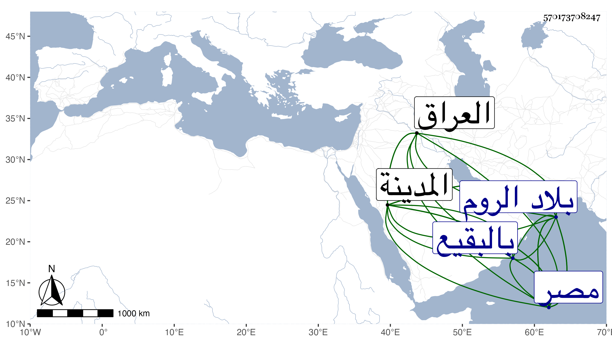

0902Sakhawi.DawLamic.ITO20230111-ara1.EIS1600.570173708247
Biography ID: 570173708247
592
حسين بن محمد بن حسن بك بن علي بك بن قرا يلوك عثمان ويلقب بمرزا وأبوه باغرلو ممن سبق له ذكر في جده . كان قتل والده على يد بايندر قاتل الدوادار الكبير أحد أمراء أبيه لخروجه عليه ففر حينئذ هذا وأخوه أحمد فأحمد لملك الروم فأقام في ظل سلطانه وهذا لمملكة مصر فأقام بها في ظل سلطانها واستقدم له ابنة عمه وكان لتزويجه بها ما ذكر في الحوادث قبل الدخول وبعده وأسكنه بيت برسباي قرا بالقرب من سويقة الصاحب ولم يلبث أن وقع الطاعون فانفرد عن عياله ببستان في فم الخور رجاء للتخلص منه بحيث أن زوجته المشار إليها ماتت فلم يجىء لشهود الصلاة عليها خوفا من العدوى زعما أو الهواء وبعد انتهاء الطاعون حج في موسمه صحبة الركب الأول فحج ورجع مترجيا ما وعده به السلطان من القيام معه في مملكة العراق مما كثر توسل هذا بالامراء وبمشافهته في إيقاعه فأدركته منيته بالمدينة النبوية في خامس عشر ذي الحجة سنة سبع وتسعين ودفن بالبقيع ويقال انه سم وكانت معه أمه وعياله فرجعوا مع الركب الغزاوي وأخر من أجل سيرهم معه قليلا ابنه هذا لمملكة مصر فأقام بها في ظل سلطانها وفر أخوه أحمد لمملكة الروم فأقام بها في ظل سلطانها . وقد لقيني صاحب الترجمة في سنة خمس وتسعين وسمع مني المسلسل واغتبط بذلك ولديه ذكاء وفطنة وميل للأدب والتاريخ مع حسن عشرة ، وممن انتفع بجاهه حين قدم عليه حبيب الله الماضي بل كثر تردد غير واحد من الفضلاء إليه ونسبته إلى الرفض غير مستبعدة وتتأيد بحكاية أهل المدينة عنه ما كان معه من صدقة ونحوها إعظاما لهم فالله أعلم عفا الله عنه وسامحه وإيانا .
